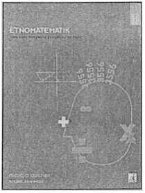

Matematiksel düşünceler, sayı, mantık, uzaysal gruplaşma, özel olarak da bunların bir sistem ya da yapı içinde biraraya gelmesi ya da düzenlenmesini içerir. Bir bütün olarak matematiksel düşünceler oldukça zengin ve çok yönlüdür. Her kültüre uyarlanacak tek bir gelişme çizgisi yoktur, onlar tek bir doğrultu üzerinde sıralanamaz ve birbirleriyle karşılaştırılamazlar. Bir kültürün sayısal sınıflandırıcılarının varlığının o kültüre kattığı önem, onlardan yoksun başka bir kültürden önce ya da sonra gelmez. Navajoların uzay-zaman kavramı Batı kültürünün uzay-zaman kavramından ne daha iyidir ne de daha kötü ya da Warlpirilerin akrabalık ilişkilerinin düzenlenmesi sekizinci derecede bir dihedral grupa denk gelmesi batılı kavramların ne önünde ne de gerisindedir.
Bu kitap geleneksel birçok halkın matematiksel düşünce sistemleri ve bunu oluşturan kültürel yaşamsal kavramların araştırılmasını içermektedir. Matematik tarihi genişletilerek ona çok kültürlü, küresel perspektiften bakılarak anlatılmıştır.
MARCIA ASCHER
New York'ta doğup büyüyen Ascher Ithaca College'da matematik profesörlüğü yapmıştır. Lisans derecesini Matematik alanında, şimdilerde New York City University’nin bir parçası olan Queens College'den almıştır. Lisansüstü çalışmalarını UCLA (University of California at Los Angeles)’de yapmıştır. Master tezi sayısal analiz üzerinedir. 1961 yılında Ithaca College'de akademisyenliğe başlamadan önce bir süre bilgisayar analisti olarak çalışmıştır. Araştırmaları son otuz yıldır geleneksel halkların çoğunlukla Batılı olmayan toplumların matematiksel düşünceleri üzerinedir.